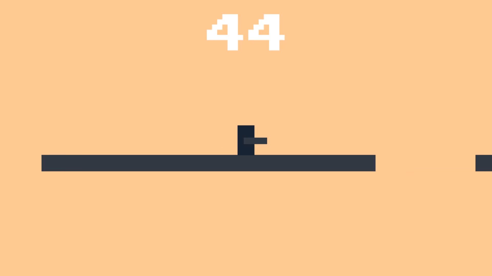

My bachelor thesis was about "Applying Methods of Game Feel" and I wrote it during my 7. semester at the Technical University of Munich in the spring of 2019. It really was more of a passion project for me, because the topic of Game Feel is one of the topics which is widely ignored or at least not talked about in the industry. I tried to create a basis for proper research into this topic, by showing that it is actually a thing that can be measured and is directly connected to flow. With the 2 user studies, which I conducted, I was able to show that there actually is something to this. Here I will only post the introduction to the topic and a few images of my game, which I created solely for the thesis.
If you want to read the whole thesis you can find it here: BachelorThesis
Introduction
Why are some games more fun than others? A very common answer to this question is that some games have better gameplay. It is true that at the base of every good game is good gameplay, but gameplay is not something completely independent of all the other things in a videogame. For example, would Super Mario 64 still be so much fun, if instead of controlling Mario with all his animations and sound effects, you would control a rectangular box? Or if the characters in Street Fighter didn’t show any signs of damage taken apart from the health bar on the top? All the game mechanics could still be in place, but you wouldn’t feel as though you are playing the same game. Apparently, there is something other than pure gameplay, that takes effect on how much fun it is to handle a game. Some people call this “Game Feel” or “Friction”, but nobody actually understands how it works or what causes it. The game designer Steve Swink first coined the term “Game Feel” in his book “Game Feel: A Game Designer’s Guide to Virtual Sensation” (Swink 2008), which has been the bible for this topic ever since it was first released. He tries to dissect this topic and explain the phenomenon. Even though it doesn’t completely explain everything, it is the best attempt at doing so to this day. Other people have talked about this and tried to explain some parts of it, but most game designers elegantly try to avoid this topic. This is due to the fact that it is very hard for a human being to describe what they feel when playing a game, because most of it happens subconsciously. Why does it feel so different to play Mario Kart compared to Gran Turismo? You could say that one handles more realistically than the other. But the cars in Mario Kart still feel like cars. There is no way for us to accurately describe what we feel when playing videogames. We simply don’t have the vocabulary for these things. The best thing we can do is to compare certain games to other games with similar mechanics, but that is not a very precise solution as everyone has a different opinion on games. This is why it is so hard to talk or even write about it.
Nonetheless there is a need to talk about this very big topic, as it is connected to the root of good game design. It is important to talk about and analyze it so that maybe one day we don’t have to rely on comparisons to other games when we want to describe how a game feels.
Media
Here you can find some videos and images of the project. The first video shows the raw gameplay and the second shows the same gameplay with some effects added on top. It is still technically the same game but it has a completely different feel to it.

If this got you interested in the topic and you want to read the whole thesis you can find it here: BachelorThesis